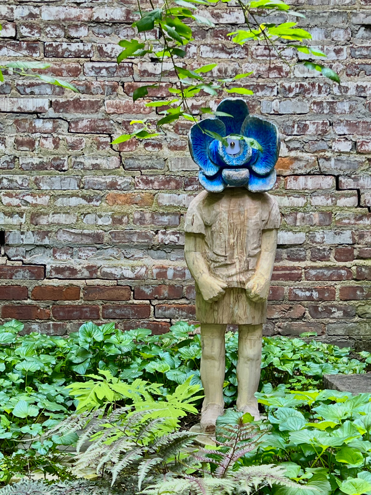
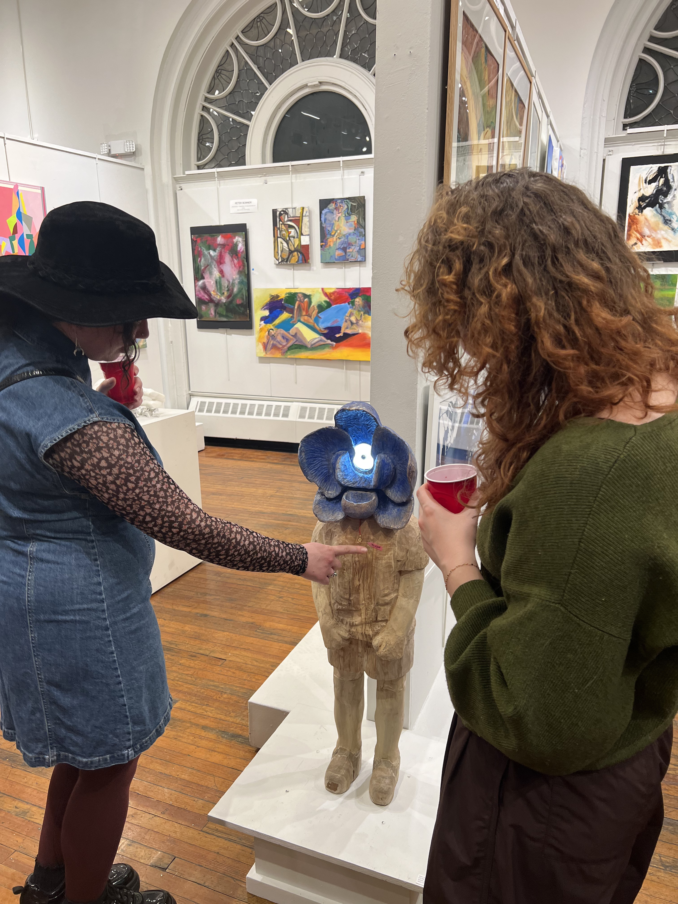
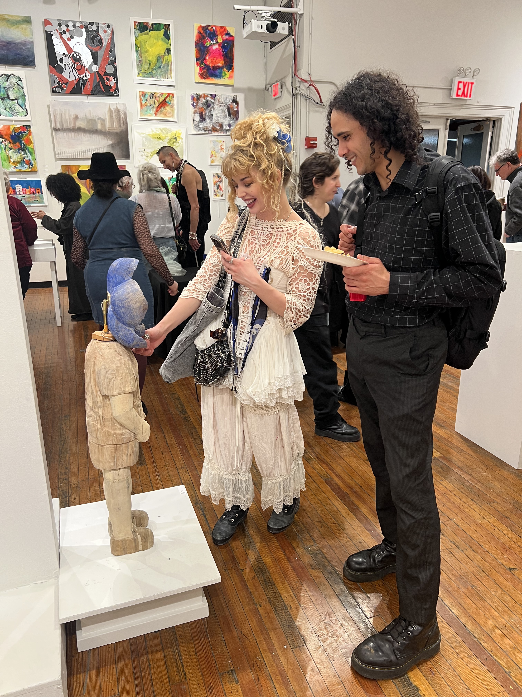

The Tenderness of Being Known
>Wood, electronics
11” x 41” x 8"
2025

The Tenderness of Being Known is a wood carved life-size boy figure with a blue flower head that operates as a touch-responsive light. This work explores intimacy as something that emerges through interaction rather than observation.
The interaction is simple and quiet, requiring the viewer to come close and engage gently. Through this gesture, the work frames touch as a form of communication, where presence and attention shape the experience. The figure remains still, while the responsive element shifts with each encounter.
By combining tactile materials with subtle technological systems, the piece creates a space where connection unfolds through action. Being “known” is not presented as a fixed condition, but as something that is activated through repeated moments of contact.
🖼️:
▫️ The Art Students League of New York Annual Student Art Show, Phyllis Harrison Mason Gallery, New York, NY (2026)


